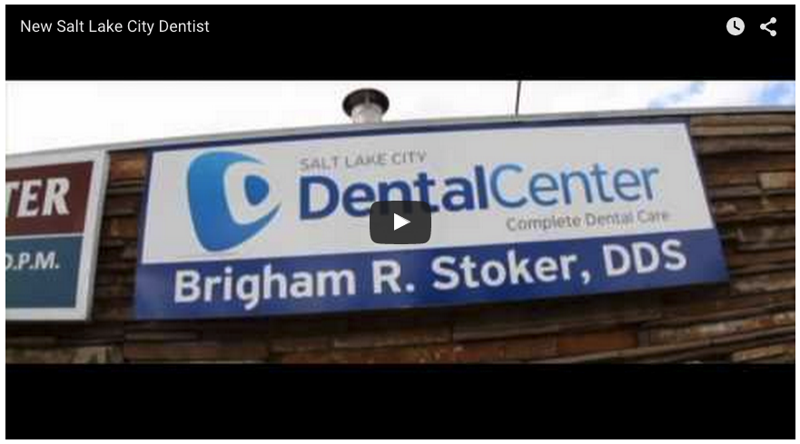

<html>

<head>
	<title>SLC dental reconstruct</title>
	<link rel="stylesheet" type="text/css" href="styles.css">
</head>

<body>
	<header class="homepage-top-bar">
			<ul class="homepage-top-bar-nav">
				<li id="icons">
					<a href="www.twitter.com"><a>
					<a href="www.facebook.com"></a>
					<a href="www.facebook.com"></a>
					<a href="www.facebook.com"></a>
				</li>
				<li>
					<p>801.505.6850</p>
				</li>
				<li>
					<p>
						Salt Lake City Dentist, Dr. Brigham Stoker DDS. 144 South 
						700 East, Suite 2, Salt Lake City, UT 84102
					</p>
				</li>
			</ul>
	</header>
<div class="wrapper">
	<div class="homepage-main-box">
		<div class="icon-and-nav">
			
			<ul>
				<li><a href="#">contact</a></li>
				<li><a href="#">office</a></li>
				<li><a href="#">services</a></li>
				<li><a href="#">reviews</a></li>
				<li><a href="#">staff</a></li>
				<li><a href="#">home</a></li>
			</ul>	
		</div>
		<div class="carosel">
			
		</div>
		<div class="three-info-boxes">
			<div class="info-box left">
				
				<p>
					Meet one of the best dentists in Salt Lake City, Dr. Brigham 
					Stoker DDS.  He will help make your experience here at the 
					Salt Lake City Dental Center a great one!
				</p>
				<p><a href="#">Meet Dr. Stoker ></a></p>
			</div>
			<div class="info-box left">
				
				<p>
					Call today to schedule a dental appointment. Emergency 
					dental visits, consultations, dental cleanings, etc. We 
					always love accepting new patients and we&#39re even open 
					on Fridays!
				</p>
				<p><a href="#">Schedule Today ></a></p>
			</div>
			<div class="info-box right">
				
				<p>
					See some of the many dental services we offer here at Salt 
					Lake City Dental Center by choosing one of the featured 
					cases above.
				</p>
				<p><a href="#">Featured Case ></a></p>
			</div>
		</div>
		<div class="homepage-main-pic">
			
		</div>
		<div class="break">
		<div class="bottom-text">
			<p class=>
				Welcome to Salt Lake City Dental Center&#39s webpage, home of your new 
				Salt Lake City Dentist, Dr. Brigham Stoker DDS! We hope this site 
				will help you get to know our dental practice a little bit better and 
				be useful in helping you make your choice of dentists in Salt Lake. 
				Our goal is to create a site that helps you, as a dental patient, 
				gain a greater understanding of modern dentistry and the dental 
				services we offer to all patients, with or without dental insurance. 
				As our website grows, we will continue adding educational content 
				and stories of real patients receiving the treatments they need in 
				our Salt Lake dental clinic.  We hope to help you understand concepts 
				like how getting tooth fillings before cavities progress too far can 
				help avoid more costly procedures, how to know when you may need a 
				dental crown, how a root canal isn&#3t as bad as you think, how mini 
				dental implants can stabilize your existing dentures, and how 
				standard dental implants are changing dentistry. And ultimately, we 
				want to demonstrate that whether you are looking for basic tooth 
				whitening or a full mouth reconstruction, we will do our best to 
				provide the same high quality of service and comfort to every patient. 
				Take a look around our site, and check back for updates soon. Thanks 
				for visiting!
			</p>
		<p>-Dr. Brigham Stoker, DDS  (and staff!)</p>
		<span class="center bold"><p>Reviews:</p></span>
		<span class="center">
			<p>(read more reviews here to see why our patients love us!)</p>
		</span>
		<p>
			&quot;After years of poor dental work done on my 2 back molars I finally 
			found my Super Dentist! He saved my mouth from years of torture. I 
			thought I was going to have to pull them both and I was just starting 
			to get used to the idea because the pain of my gums was just too 
			much to bare. Strangely enough that didn&#39t even come up in conversation. 
			He fixed both of my sub-par crowns, took out the old silver remnants 
			that was possibly causing some of the pain. He said I could have 
			been allergic to the metal trapped under my crowns that none of the 
			other dentists cleared out and the shape of the old crowns were 
			trapping everything that went in and I couldn’t get it out. Now just 
			1 week later, my gums feel like nothing was ever wrong and my horrid 
			tooth aches are gone! I mean honestly! I will be recommending Dr 
			Stoker to all my friends and family. He is amazing and his staff is 
			great too. I still can’t believe he fixed it! This is like 5 dentists 
			later. It&#39s amazing.&quot; Heather H.
		</p>
		<p>
			&quot;Everyone knows that the first time that you see a new dentist it is 
			the most nerve racking experience. When I walked into his office his 
			staff automatically made me at easy. Dr. Stoker and his staff teat 
			you with the respectable and best possible care. They also are great 
			at explaining what is needed to complete your dental needs. This was 
			the best part and experience that I have ever had. Dr. Stoker seems 
			to have the most equipment as it appears to me. I had some problems 
			with pain Dr. Stoker and his staff was able to help resolve it and 
			explain it to so that I could understand. Would I recommend him and 
			his staff that is an astounding yes.&quot; -Gerry F.
		</p>
			 &quot;I&#39m a raving new fan of Dr. Stoker. I am so impressed. He is honest 
			 and will tell you candidly what your options are. He is skillful, 
			 has steady hands and is careful to make sure you aren’t experiencing 
			 any pain whatsoever. I didn&#39t even feel the needle go in. That&#39s 
			 huge for me. His office is beautiful and professional, and his staff 
			 is exceptional.&quot; -Jory A.
		<p>
			&quot;Doctor Stoker is the BEST. We found his practice online, during 
			an emergency. He called me back late on a Saturday night just to 
			make sure I was taken care of. Dr. Stoker and staff have been 
			extremely nice, professional and honest. Their facility is top-notch 
			and comfortable. I have many family members in the dental field, 
			yet I have never met someone of his caliber. If you’re thinking 
			about calling him, you will not regret it. I will remain his patient 
			as long as possible. Keep up the great work!!&quot; -Kirk M.
		</p>
	</div>
		<div class="homepage-video">
			
		</div>
	</div>
</div>

</body>

</html>